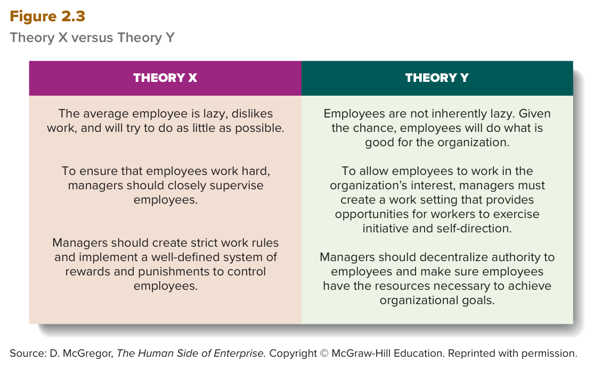

MGT 102 · Chapter 2 · Section 3 of 4:
Behavioral Management Theory
Objective LO2-4: Trace the changes in theories about how managers should behave to motivate and control employees.
In the two previous sections, Taylor studied the task, and Weber and Fayol built the
structure. In this section the researchers asked a
third, completely different question: the manager's own behavior —
his words, his style, his assumptions about people —
how does it affect the employee's performance?
That is behavioral management, and it is the whole of objective LO2-4.
The section has three stops only: Mary Parker Follett, the Hawthorne studies, and Theory X versus Theory Y from McGregor. Focus on who said what — most exam questions in this section give you a sentence and ask you whose it is, or give you a scenario and ask which concept it is.
You already met these ideas in Arabic. This page gives you the same ideas in English, because your textbook and your exam are in English.
There is a historical fact the book opens the section with, and the exam likes it: the writings of Weber and Fayol were not translated into English and published in the United States until the late 1940s. So American management theorists in the first half of the 20th century were unaware of these European pioneers, and so they began where Taylor and his followers left off.
Although their writings were different, all of them espoused one theme called behavioral management: the study of how managers should personally behave to motivate employees and encourage them to perform at high levels and be committed to achieving organizational goals.
Let us line up the three schools you have met so far, so you do not mix them up on the exam:
| School | What it focuses on | The names |
|---|---|---|
| Scientific management | The person + the task (efficiency in motion and time) | Taylor · the Gilbreths |
| Administrative management | The organizational structure and the control system | Weber · Fayol |
| Behavioral management | The manager's own behavior and motivating people | Follett · Mayo · McGregor |
And you can split this section into three stops in time order: (1) the work of Mary Parker Follett — (2) the Hawthorne studies and the human relations movement — (3) Theory X and Theory Y from Douglas McGregor, after World War II.
Because the writings of Weber and Fayol were not translated into English and published in the United States until the late 1940s, American management theorists in the first half of the 20th century were unaware of the contributions of these European pioneers. American management theorists began where Taylor and his followers left off.
These theorists all espoused a theme that focused on behavioral management, the study of how managers should personally behave to motivate employees and encourage them to perform at high levels and be committed to achieving organizational goals.
Mary Parker Follett (1868–1933) was another important researcher in the field of management theory, and most of her writing came out as a response to her concern that Taylor was ignoring the human side of the organization.
How? Taylor never proposed that managers should involve workers in analyzing their jobs to find better ways to perform tasks, or even ask them how they felt about their jobs. Instead he used time-and-motion experts to analyze workers' jobs for them.
Follett in contrast argued that because workers know the most about their jobs, they should be involved in job analysis, and managers should allow them to participate in the work development process. She also pointed out that management often overlooks the multitude of ways employees can contribute to the organization — if managers just let them participate and exercise initiative in their everyday work lives.
Her famous quote — memorize it in English exactly as it is: “authority should go with knowledge … whether it is up the line or down.”
In other words: if workers have the relevant knowledge, then workers, rather than managers, should be in control of the work process itself, and the manager behaves as a coach and facilitator — not as a monitor and supervisor. With this statement Follett anticipated the current interest in self-managed teams and empowerment.
She also recognized the importance of having managers in different departments communicate directly with each other to speed decision making, and she advocated what she called “cross-functioning”: members of different departments working together in cross-departmental teams to accomplish projects — an approach that is used more and more today.
Fayol mentioned expertise and knowledge as important sources of managers' authority (remember informal authority in section 2?), but Follett went further. She proposed that knowledge and expertise — not managers' formal authority coming from their position in the hierarchy — should decide who will lead at any particular moment. She believed that power is fluid and should flow to the person who can best help the organization achieve its goals.
| Mary Parker Follett | Henri Fayol | |
|---|---|---|
| Her view of power | horizontal | vertical |
| What matters most | Knowledge and expertise decide who leads | The formal line of authority and the vertical chain of command |
| The manager's role | coach and facilitator | A holder of authority who gives orders and monitors |
| The idea she anticipated | self-managed teams · empowerment · cross-functioning | — |
And the book's judgement of her: her behavioral approach to management was very radical for its time — and probably because of that, her work was unappreciated by managers and researchers until quite recently. Most of them continued to follow in the footsteps of Taylor and the Gilbreths.
Much of Mary Parker Follett's writing about management and about the way managers should behave toward workers was a response to her concern that Taylor was ignoring the human side of the organization. Follett proposed that “authority should go with knowledge . . . whether it is up the line or down.” In other words, if workers have the relevant knowledge, then workers, rather than managers, should be in control of the work process itself, and managers should behave as coaches and facilitators—not as monitors and supervisors.
She advocated what she called “cross-functioning”: members of different departments working together in cross-departmental teams to accomplish projects. Follett took a horizontal view of power and authority, in contrast to Fayol, who saw the formal line of authority and vertical chain of command as being most essential to effective management.
One series of studies was conducted from 1924 to 1932 at the Hawthorne Works of the Western Electric Company — today known as the Hawthorne studies.
The original goal: to investigate how characteristics of the work setting — specifically the level of lighting, or illumination — affect worker fatigue and performance. So they ran an experiment that systematically measured worker productivity at various levels of illumination.
The result they did not expect: regardless of whether they raised or lowered the level of illumination, productivity increased! The only exception: productivity began to fall only when the illumination dropped to the level of moonlight — a level at which the worker could no longer see well enough to do the work efficiently.
The researchers found these results puzzling, so they invited a noted Harvard psychologist, Elton Mayo, to help them. (Careful: Mayo came in after the lighting experiments, not from the start.)
Mayo proposed another series of experiments, the relay assembly test experiments, designed to investigate the effects of other aspects of the work context on performance, such as the number and length of rest periods and hours of work on fatigue and monotony. The goal was to increase productivity.
The study ran for two years on a small group of female workers. What they observed: productivity increased over time, but the increases could not be attributed only to changes in the work setting. Gradually they discovered that the results were influenced by the fact that the researchers themselves had become part of the experiment — the workers enjoyed receiving attention and being the subject of study, and they were willing to cooperate to produce the results they believed the researchers desired.
Later it was found that many other factors also influence worker behavior, and it was not clear what was actually influencing the Hawthorne workers. But this particular effect — which became known as the Hawthorne effect — seemed to suggest that workers' attitudes toward their managers affect the level of workers' performance. And the significant finding in particular: each manager's personal behavior or leadership approach can affect performance.
That finding turned many researchers' attention to managerial behavior and leadership: if supervisors could be trained to behave in ways that elicit cooperative behavior from their employees, productivity could be increased. From this view emerged the human relations movement: a management approach that advocates the idea that supervisors should receive behavioral training to manage employees in ways that elicit their cooperation and increase their productivity.
The researchers found that regardless of whether they raised or lowered the level of illumination, productivity increased. Productivity began to fall only when the level of illumination dropped to the level of moonlight. The researchers found these results puzzling and invited a noted Harvard psychologist, Elton Mayo, to help them. Mayo proposed another series of experiments. These experiments, known as the relay assembly test experiments, were designed to investigate the effects of other aspects of the work context on job performance, such as the effect of the number and length of rest periods and hours of work on fatigue and monotony.
This particular effect—which became known as the Hawthorne effect—seemed to suggest that workers' attitudes toward their managers affect the level of workers' performance. In particular, the significant finding was that each manager's personal behavior or leadership approach can affect performance. From this view emerged the human relations movement, which advocates that supervisors be behaviorally trained to manage employees in ways that elicit their cooperation and increase their productivity.
The importance of behavioral, or human relations, training became even clearer to its supporters after a third series of experiments — the bank wiring room experiments: a study of workers making telephone switching equipment, and the researchers in it were Elton Mayo and F. J. Roethlisberger.
The finding: the workers, as a group, had deliberately adopted a norm of output restriction to protect their jobs. Workers who violated this informal production norm were subjected to sanctions by other group members.
And from here come the two terms the exam loves to reverse:
| Term | Who is he? | Why does he threaten the group? |
|---|---|---|
| “ratebusters” | The one who performs above the norm — faster than required | He reveals to managers how fast the work can be done |
| “chiselers” | The one who performs below the norm — slower than required | He is looked down on because he is not doing his share of the work |
The conclusion of the experimenters: both types threatened the group as a whole, and group members disciplined both of them to create a pace of work that the workers — not the managers — thought was fair. So a work group's influence over output can be as great as the supervisors' influence. That is why some management theorists say: train supervisors to behave in ways that gain the goodwill and cooperation of workers, so that supervisors, not workers, control the level of work group performance.
The main implication: the behavior of managers and workers in the work setting is as important in explaining the level of performance as the technical aspects of the task. So the manager must understand the informal organization: the system of behavioral rules and norms that emerge in a group, when he tries to manage or change behavior in the organization.
Many studies have found that as time passes, groups often develop elaborate procedures and norms that bond members together, and that allow unified action in two possible directions: either cooperating with management to raise performance, or restricting output and thwarting the attainment of organizational goals. (Notice the two directions — the exam likes to say "norms always hurt performance", and that is wrong.)
The Hawthorne studies demonstrated the importance of understanding how the feelings, thoughts, and behavior of work group members and managers affect performance. And from these early studies dates a field called organizational behavior: the study of the factors that have an impact on how individuals and groups respond to and act in organizations.
In a study of workers making telephone switching equipment, researchers Elton Mayo and F. J. Roethlisberger discovered that the workers, as a group, had deliberately adopted a norm of output restriction to protect their jobs. Those who violated group performance norms and performed above the norm were called “ratebusters”; those who performed below the norm were called “chiselers.” Thus, a work group's influence over output can be as great as the supervisors' influence.
Managers must understand the workings of the informal organization, the system of behavioral rules and norms that emerge in a group. The increasing interest in the area of management known as organizational behavior, the study of the factors that have an impact on how individuals and groups respond to and act in organizations, dates from these early studies.
Several studies after World War II revealed how a manager's assumptions about workers' attitudes and behavior affect the manager's own behavior. The most influential approach was developed by Douglas McGregor in his book The Human Side of Enterprise: he proposed two sets of assumptions about work attitudes and behaviors, and these assumptions not only dominate the way managers think but also affect how they behave. He named the two contrasting sets Theory X and Theory Y.

This is Figure 2.3 in the book. Two columns face each
other: THEORY X on the left and THEORY Y on the right, and each column has three points that
match one to one — read it line against line: (1) the nature of the employee, (2) what the manager does,
(3) rules and authority. The source under the figure is
D. McGregor, The Human Side of Enterprise.
What gets asked: they give you a sentence from the figure and ask "X or Y?". The key:
X = lazy + closely supervise + strict rules + rewards and punishments.
Y = not inherently lazy + initiative and self-direction + decentralize authority +
resources.
Theory X: a set of negative assumptions about workers that leads to the conclusion that the manager's task is to supervise workers closely and control their behavior.
Theory Y: a set of positive assumptions about workers that leads to the conclusion that the manager's task is to create a work setting that encourages commitment to organizational goals and gives workers opportunities to be imaginative and to exercise initiative and self-direction.
Southwest Airlines has long been the envy of the airline industry, and its leadership cites their Theory Y culture as a driving force. Inspired by the late cofounder and former CEO Herb Kelleher, the company emphasizes a culture of fun, creativity, and camaraderie. Five points the book mentions:
According to the assumptions of Theory X, the average worker is lazy, dislikes work, and will try to do as little as possible. Moreover, workers have little ambition and wish to avoid responsibility. Thus, the manager's task is to counteract workers' natural tendencies to avoid work. To keep workers' performance at a high level, the manager must supervise workers closely and control their behavior by means of “the carrot and stick”—rewards and punishments. Henry Ford, who closely supervised and managed his workforce, fits McGregor's description of a manager who holds Theory X assumptions.
In contrast, Theory Y assumes that workers are not inherently lazy, do not naturally dislike work, and, if given the opportunity, will do what is good for the organization. It is the manager's task to create a work setting that encourages commitment to organizational goals and provides opportunities for workers to be imaginative and to exercise initiative and self-direction. Henri Fayol's approach to administration more closely reflects the assumptions of Theory Y rather than Theory X.
The questions are in English because the exam is in English. Answer first, then open the solution. If you miss question 2 or 5, go back to the trap "Theory X versus Theory Y".
A. Productivity went up whether they raised or lowered the lighting, and what was really working was the attention and the manager's behavior — that is exactly the Hawthorne effect: a manager's behavior or leadership approach can affect workers' performance. The trap is in B: the informal organization is the system of rules and norms that emerge in the group — it came out of the bank wiring room experiments, not the lighting experiment. C is a trap from those same later experiments. And D belongs to the Taylor and Adam Smith section anyway.
C. This is word for word the third point in the THEORY Y column of the figure: decentralize authority + resources. A, B and D are exactly the three points in the THEORY X column — and the trap is that the figure puts them facing each other line by line, so if you do not read it column by column you mix them. The key: any sentence with closely supervise, strict rules, or lazy is X.
B. A ratebuster is above the norm (he reveals to managers how fast the work can be done), and a chiseler is below the norm (he is not doing his share). The trap is in A: it is reversed — and that is the most common mistake on this question. C uses words from Follett (the manager is a coach and facilitator, not a monitor) and has nothing to do with this, and D puts in a term that is not in the chapter at all.
D. This is Henri Fayol's view, not Follett's. The book says explicitly that Follett took a horizontal view of power, in contrast to Fayol, who saw the formal line of authority and vertical chain of command as the most essential. A is her famous quote, B is her criticism of Taylor, and C is the cross-functioning she advocated. Watch the word NOT — they gave you three correct ideas so you would rush.
B. "Lazy + close supervision + strict rules and SOPs + carrot and stick + no autonomy" is Theory X word for word, and the book's example of a Theory X manager is Henry Ford. The trap is in C: it swaps the name — the book says Fayol is closer to Theory Y, not X. A uses the word rewards to pull you toward Y, but a system of rewards and punishments used for control is an X tool. And D, the human relations movement, is something completely different: behavioral training for supervisors.
| Term | What it means | Watch out for |
|---|---|---|
| Behavioral management | The study of how managers should personally behave to motivate employees | The manager's behavior — not the worker's, and not a classical theory |
| Mary Parker Follett | Early management thinker (1868–1933) who attacked Taylor for ignoring the human side | Horizontal view of power · "authority should go with knowledge" |
| Cross-functioning | Members of different departments working together in cross-departmental teams | Follett's term — not Mayo's |
| Coach and facilitator | The manager's role when workers hold the knowledge | Follett's answer — not monitor and supervisor |
| Hawthorne studies | Studies of how the work setting affects fatigue and performance | 1924–1932 at the Hawthorne Works of Western Electric |
| Relay assembly test experiments | Experiments on rest periods and hours of work | Two years · a small group of female workers · proposed by Mayo |
| Hawthorne effect | The finding that a manager's behavior or leadership approach can affect workers' performance | Not "more light raises output" — that was only the starting experiment |
| Human relations movement | A management approach: supervisors should receive behavioral training | Training supervisors to elicit cooperation — not group norms |
| Bank wiring room experiments | A study of workers making telephone switching equipment | Mayo + Roethlisberger |
| Norm of output restriction | A group norm that limits how much is produced | Adopted deliberately to protect their jobs; violators face sanctions |
| Ratebusters | Workers who performed above the norm | They reveal to managers how fast the work can really be done |
| Chiselers | Workers who performed below the norm | They are not doing their share. Do not reverse them with ratebusters |
| Informal organization | The system of behavioral rules and norms that emerge in a group | It can raise performance or restrict output — both directions |
| Organizational behavior | The study of the factors that have an impact on how individuals and groups respond to and act in organizations | Dates from the Hawthorne studies — not the same as behavioral management |
| Douglas McGregor | The author of Theory X and Theory Y | His book: The Human Side of Enterprise |
| Theory X | A set of negative assumptions → supervise closely and control behavior | The book's example: Henry Ford |
| Theory Y | A set of positive assumptions → create a setting that encourages commitment, initiative and self-direction | Fayol is closer to Y · 3M, Apple, Google, Southwest |
| The carrot and stick | Rewards and punishments | The tool of a Theory X manager |
| Self-direction / self-control | The worker directs and controls himself when committed to the goals | The mark of Theory Y; but the employee stays accountable |
| Self-managed teams · Empowerment | Teams that run themselves · giving employees power | Ideas Follett anticipated — the chapter gives them no formal definition |
These are the general English words on this page, not the management terms. Learn them and the textbook gets much easier to read.
| Word | Part of speech | العربية | Example sentence from this lesson |
|---|---|---|---|
| accountable | adjective | مسؤول / محاسَبيعني لازم تجاوب عن شغلك وتتحمّل نتيجته، أحد بيسألك عنه | Under Theory Y, individuals and groups are still accountable for their activities. |
| ambition | noun | طموحيعني رغبة قوية توصل لشي أكبر وتتقدّم | Theory X assumes that workers have little ambition and wish to avoid responsibility. |
| anticipate | verb | يستبق / يتوقع مقدّماًيعني تجيب الفكرة أو تتوقّعها قبل الناس بزمن طويل | With this statement Follett anticipated the current interest in self-managed teams and empowerment. |
| assumption | noun | افتراضيعني شي تصدّقه وتبني عليه بدون ما تتأكد منه | Several studies after World War II revealed how a manager's assumptions about workers affect the manager's own behavior. |
| attribute | verb | يُنسب إلىيعني تقول هذا الشي سببه كذا، ترجّعه لسببه | The increases could not be attributed only to changes in the work setting. |
| counteract | verb | يعاكس / يقاوميعني تسوي شي عكس اتجاه شي ثاني عشان توقفه | The Theory X manager's task is to counteract workers' natural tendencies to avoid work. |
| deliberately | adverb | عمداً / بقصديعني بكامل قصده، مو صدفة ولا غلط | The workers, as a group, had deliberately adopted a norm of output restriction to protect their jobs. |
| discretion | noun | صلاحية تقديريةيعني عندك حرية تقرر بنفسك بدون ما تستأذن كل مرة | Southwest gives its employees significant discretion, which enables them to solve problems quickly. |
| elicit | verb | يستخرج / يستدرجيعني تطلّع من الشخص تصرّف أو جواب بطريقتك | If supervisors could be trained to behave in ways that elicit cooperative behavior from their employees, productivity could be increased. |
| emerge | verb | تنشأ / تظهريعني تطلع وتبدأ توجد لحالها من داخل الشي | The informal organization is the system of behavioral rules and norms that emerge in a group. |
| fatigue | noun | تعب / إجهاديعني الجسم أو الذهن طفش وما عنده طاقة | The Hawthorne studies began as an attempt to investigate how the level of lighting affects worker fatigue and performance. |
| illumination | noun | إضاءةيعني مقدار النور في المكان | They systematically measured worker productivity at various levels of illumination. |
| imaginative | adjective | خلّاق / عنده خياليعني يطلّع أفكار جديدة من راسه | Theory Y gives workers opportunities to be imaginative and to exercise initiative and self-direction. |
| ingenuity | noun | براعة / ذكاء في الحليعني شطارة تلقى بها حلول ما أحد فكّر فيها | The limits of collaboration are not limits of human nature but of management's ingenuity. |
| inherently | adverb | بطبيعته / فطرياًيعني من أصل خلقته، مو شي تعلّمه | Theory Y assumes that workers are not inherently lazy and do not naturally dislike work. |
| initiative | noun | مبادرةيعني تبدأ الشي من نفسك بدون ما أحد يقول لك | Follett said management overlooks the ways employees can contribute when managers let them participate and exercise initiative. |
| monotony | noun | رتابة / ملليعني نفس الشي يتكرر لين تطفش منه | The relay assembly test experiments studied the effect of rest periods and hours of work on fatigue and monotony. |
| overlook | verb | يغفل عن / ما ينتبه لهيعني الشي موجود بس ما شافه ولا حسب له حساب | Follett pointed out that management often overlooks the multitude of ways employees can contribute to the organization. |
| puzzling | adjective | محيّريعني ما تفهم ليش صار كذا، يخلّيك تحتار | The researchers found these results puzzling, so they invited Elton Mayo to help them. |
| radical | adjective | جذري / راديكالييعني يقلب الشي من أساسه، مو تعديل بسيط | Follett's behavioral approach to management was very radical for its time. |
| regardless | adverb | بغض النظر عنيعني ما يفرق وش صار، النتيجة نفسها | Regardless of whether they raised or lowered the level of illumination, productivity increased. |
| restriction | noun | تقييد / حديعني تحط سقف أو حدود ما تعدّيها | The workers had deliberately adopted a norm of output restriction to protect their jobs. |
| sanction | noun | عقوبة / جزاءيعني عقاب ينزل على اللي يخالف القاعدة | Workers who violated this informal production norm were subjected to sanctions by other group members. |
| solicit | verb | يطلب / يستطلعيعني تطلب رأي الناس وتسألهم قبل ما تقرر | Southwest solicits input from its employees on how to improve operations. |
| supervise | verb | يشرف على / يراقبيعني تقف على الشغل وتتابع اللي يسوونه | The Theory X manager must supervise workers closely and control their behavior. |
| tendency | noun | ميل / نزعةيعني الشي اللي الواحد يميل له عادةً بطبعه | The manager's task is to counteract workers' natural tendencies to avoid work. |
| threaten | verb | يهدّديعني يعرّض الشي للخطر أو يخوّف منه | The experimenters concluded that both types of workers threatened the group as a whole. |
| violate | verb | يخالف / يخرقيعني يكسر القاعدة ويسوي عكسها | Workers who violated this informal production norm were subjected to sanctions by other group members. |
Built from the text of the textbook Contemporary Management 12e (Jones & George, McGraw Hill) —
Chapter 2: The Evolution of Management Thought, third section Behavioral Management Theory,
objective LO2-4 (pages 44–47), with the book's Summary and Review for the same objective.
Summarized only: the Southwest Airlines example of a Theory Y culture is given
in its five points without the book's full text, and the photo captions
(the Mary Parker Follett portrait and the 1931 telephone plant workers) are
folded into the explanation. Self-managed teams and empowerment are
mentioned by the chapter without a formal definition.